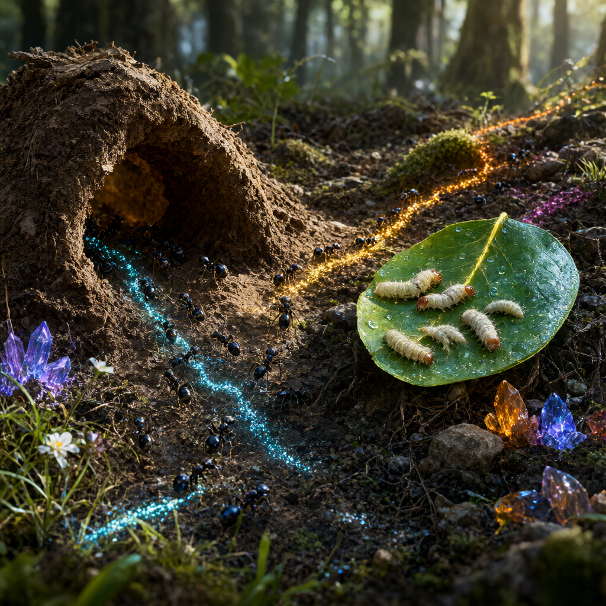

信息素路线
长度加权派兵、优先级 1–100、命名标记、回拖撤回，策略深度由你掌控。
在森林地表绘制信息素路线，招募并派遣蚁群，采集资源、抵御虫潮，在星级结算中购买永久升级，逐步扩建属于你的地下王国。
拖动建立信息素路径，长度与优先级决定派兵策略；自交与障碍会触发红色无效预警。
工蚁、兵蚁、喷射蚁、轰炸蚁各有职能，按路线需求编组出征。
叶面幼虫、泥土、尸体三类资源驱动兵力补充与永久成长。
敌人按波次不断来袭，合理布防才能守住巢穴生命线。
星级结算购买 12 项永久升级，打造独一无二的蚁群流派。
长度加权派兵、优先级 1–100、命名标记、回拖撤回，策略深度由你掌控。
敌人按时间表分批刷新，压力逐步升级，考验防线韧性。
三类资源分布于战场，工蚁往返运输，支撑兵力与科技。
四兵种各三条升级路线，共 12 项技能，塑造专属蚁群。
四种蚂蚁构成完整战术体系，信息素颜色让你在混乱战场一眼识别战线。
采集资源、修建路线，蚁群运转的基石。
近战主力，前排拦截虫潮的中坚力量。
远程喷射酸液，压制成群敌人。
自爆造成范围伤害，扭转战局的关键。
单机战役与无限模式共 36 关。从新手教学到高难度虫潮，逐步掌握信息素战术。
多名玩家在同一超大地下地图中共同防御，分工建立防线、共享资源、协同抵御多方向虫潮袭击。
多个玩家巢穴在同一片广袤地表/地下战场上角逐，争夺资源、扩张领地，最终只有一个巢穴能屹立不倒。
成就、图鉴与统计，记录你每一次蚁巢征程的高光时刻。
四季更迭，生态延展。点击大图可全屏查看，使用左右箭头或缩略图切换全部 7 个生态。

以上生态主题仅为未来可能扩展方向，不代表 DLC 已立项、已制作或已上线。规划仅供参考，开发存在变数。
📅 规划仅供参考，开发存在变数，一切以实际进度为准。
项目开始，头脑风暴
架构选择，调研
DEMO 上线，玩法验证
联机 PVE 装机测试，多人蚁群协作玩法首轮验证
问题修复、压力测试，开启 PVP 小规模内部试玩
PVP 装机测试，蚂蚁阵营对抗玩法完整落地
宣发预热，参加 Steam Next Fest，全力冲刺愿望单
上线前准备，服务器极限压力测试
Steam 正式版发售
Android 测试 DEMO（v0.1.5473）现已开放下载，用于双端玩法验证；其余平台入口将随开发路线逐步开放。
安卓测试 DEMO
下载 APK · 132 MB Android 7.0+ · arm64 / armeabi-v7aTapTap 预约
预计 2026.12微信小游戏 DEMO
预计 2026.12Steam 愿望单
预计 2027 Q3–Q4